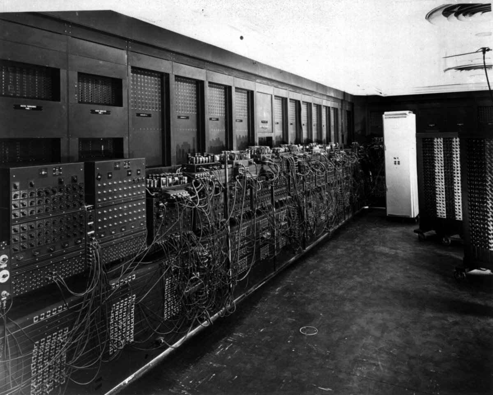

1830–1960: Предыстория
Задолго до появления интернета человечество мечтало о мгновенной передаче информации на расстоянии. Первым шагом к этому стал электрический телеграф - изобретение, появившееся в 1830-х годах. Впервые стало возможным передавать сообщения по проводам на сотни километров за считанные минуты, а не недели.

В 1876 году Александр Белл запатентовал телефон, а в конце XIX века Гульельмо Маркони и Александр Попов независимо друг от друга разработали радиосвязь. Информация начала передаваться без проводов - правда, пока только голос и телеграфные сигналы.
Первые вычислительные машины
Параллельно развивалась вычислительная техника. В 1837 году Чарльз Бэббидж предложил проект аналитической машины - первого программируемого компьютера, который так и не был построен при его жизни. Идеи Бэббиджа опередили время почти на сто лет.
В 1930-х и 1940-х годах появились первые электронные вычислительные машины:
- Z3 (Германия, 1941) - первая программируемая машина на реле.
- ENIAC (США, 1946) - первый полностью электронный компьютер, весил 30 тонн и использовал 17 000 ламп.
- EDSAC (Великобритания, 1949) - первый компьютер с хранимой программой.
Идея глобальной сети
В 1945 году американский инженер Вэнивар Буш опубликовал статью «Как мы можем думать», в которой описал концепцию Memex - устройства для хранения и связи всех знаний человечества. Это была одна из первых идей гипертекста - задолго до WWW.
В 1960 году Джозеф Ликлайдер (тогда - психолог, позже - один из отцов интернета) опубликовал работу «Симбиоз человека и компьютера», в которой предложил идею «Галактической сети» - глобальной сети компьютеров, доступной каждому человеку.
Именно эти идеи - телеграф, телефон, радио, первые компьютеры и мечты о глобальной сети - стали фундаментом, на котором в 1960-х годах началось строительство ARPANET. Об этом - на следующей странице.
Ключевые даты
- 1837 - электрический телеграф (Морзе, Кук, Уитстон).
- 1876 - патент на телефон (Белл).
- 1895 - радиосвязь (Попов, Маркони).
- 1937 - аналитическая машина Бэббиджа (проект).
- 1945 - концепция Memex (Буш).
- 1946 - первый электронный компьютер ENIAC.
- 1960 - идея «Галактической сети» (Ликлайдер).